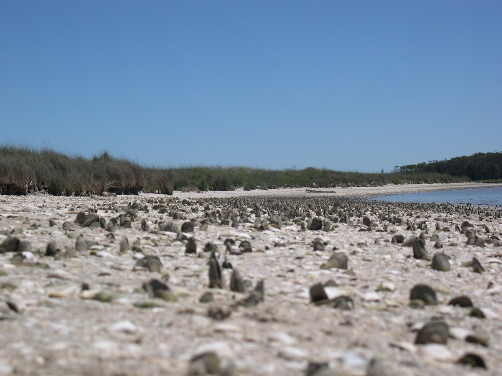
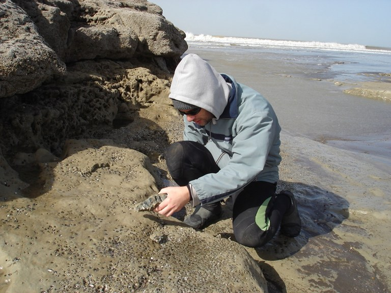
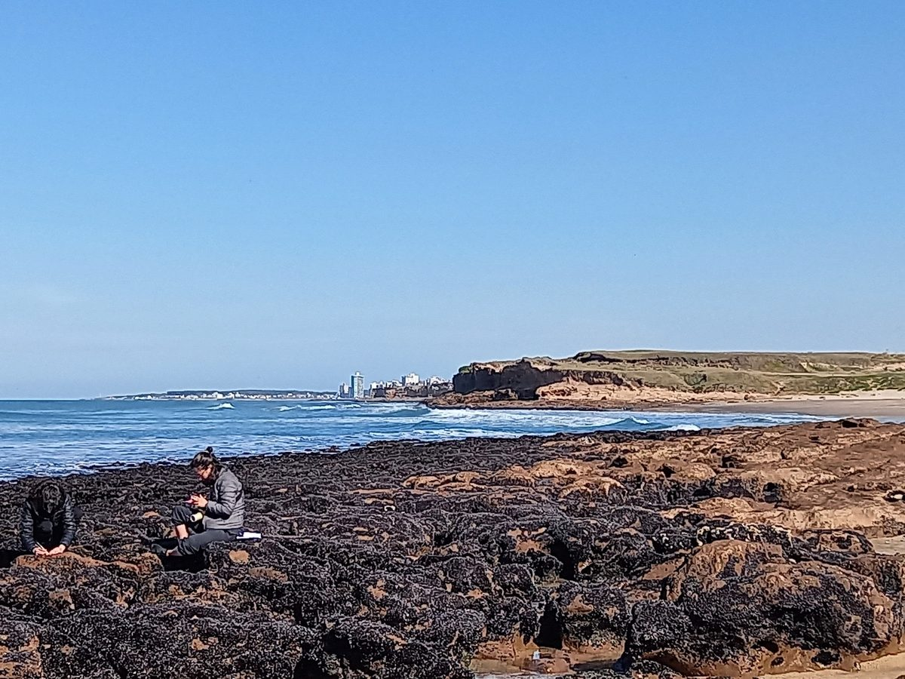
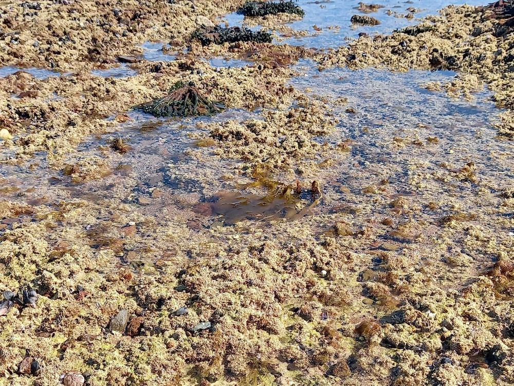
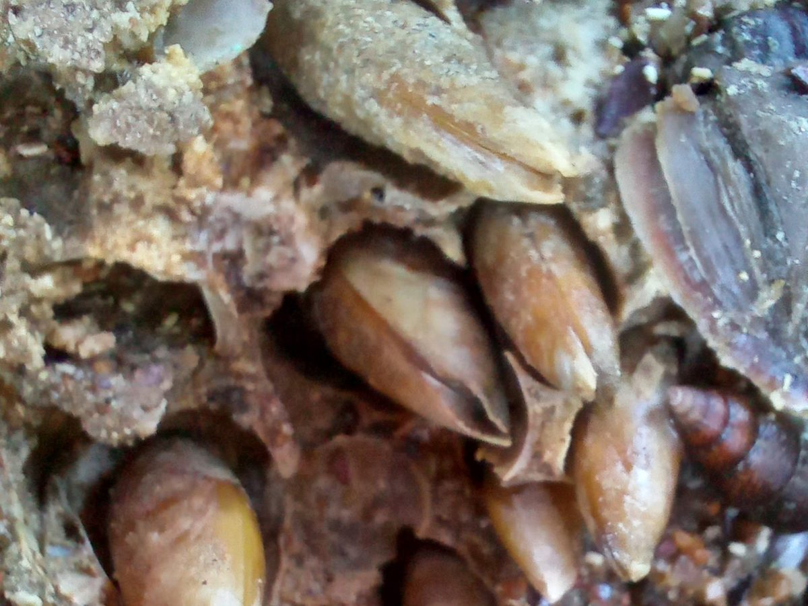
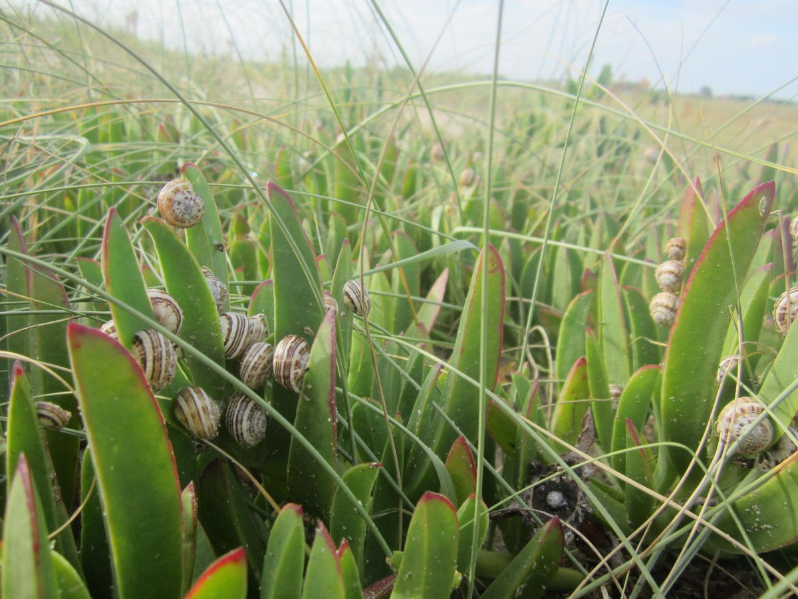
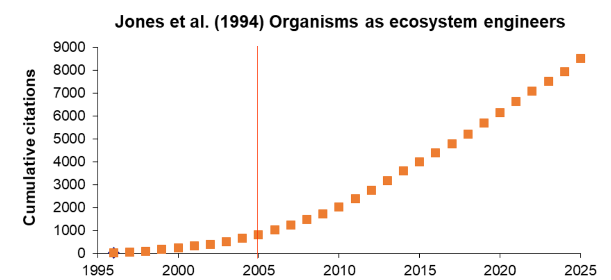
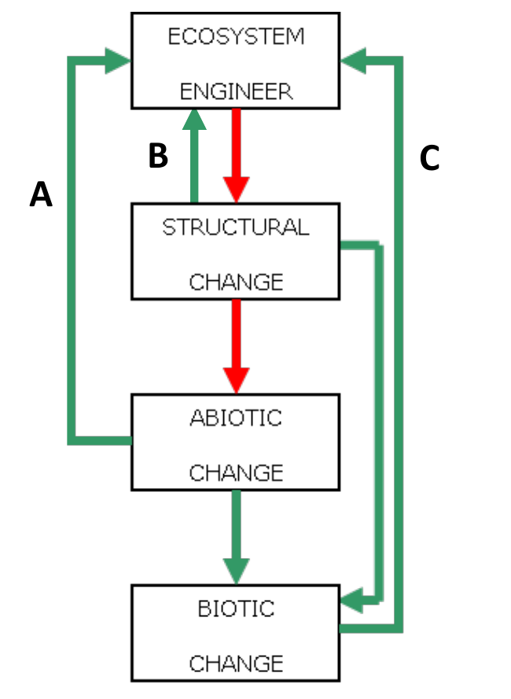
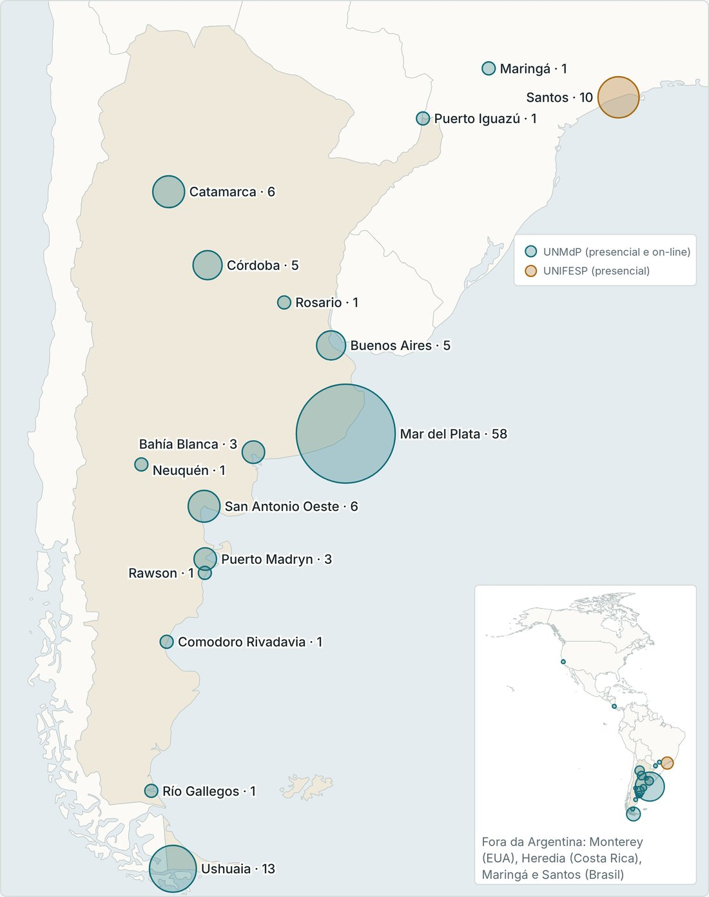

Pesquisador Principal, CONICET · Universidad Nacional de Mar del Plata, Argentina
Professor Visitante, Instituto do Mar, Universidade Federal de São Paulo, Brasil
Sou biólogo e pesquiso como os organismos modificam fisicamente o seu ambiente, ou seja, como atuam como engenheiros de ecossistemas, e quais as consequências disso para a biodiversidade, o funcionamento dos ecossistemas e a integridade do ambiente físico. Trabalho principalmente em ambientes costeiros do Atlântico Sudoeste, de costões rochosos e fundos de algas calcárias a marismas e dunas. Fiz meu doutorado em Ciências Biológicas na Universidad Nacional de Mar del Plata, Argentina, e meu pós-doutorado no Institute of Ecosystem Studies (hoje Cary Institute of Ecosystem Studies), nos Estados Unidos. Nas horas vagas, me dedico à observação de aves e compartilho meus registros no eBird.
Ingressei no Instituto do Mar (UNIFESP), Santos, Brasil, como Professor Visitante, para ministrar disciplinas de pós-graduação sobre os organismos como engenheiros de ecossistemas e outros temas de ecologia, e para dar continuidade à nossa pesquisa sobre engenharia de ecossistemas por algas calcárias.
Novo artigo: “The rolling stones' legacy: rhodoliths retain their habitat function after algal death” (Marine Environmental Research). DOI: 10.1016/j.marenvres.2025.107809
Novo artigo: “Thermal refugia and summer survival of the non-native land snail Theba pisana in Pampean coastal dunes: the role of invasive iceplants” (Acta Oecologica). DOI: 10.1016/j.actao.2026.104166
Pesquisa
Modificação do Ambiente pelos Organismos

Banco de conchas do bivalve Tagelus plebeius, laguna costeira Mar Chiquita, Província de Buenos Aires, Argentina.
Minha pesquisa tem como foco os organismos como engenheiros de ecossistemas, ou seja, a forma como os organismos modificam fisicamente o seu ambiente. Estudo as consequências dessas modificações para a composição e a riqueza das comunidades biológicas, para os fluxos de matéria e energia nos ecossistemas e para a integridade do ambiente físico, por meio de processos como a bioerosão e a bioproteção. Também investigo como o ambiente físico e outros organismos influenciam a abundância, a persistência e a atividade dos engenheiros, bem como diversos aspectos de sua biologia. Meu interesse por esse tema surgiu cedo na minha carreira, quando estudava os bancos de conchas do bivalve Tagelus plebeius como habitats bentônicos distintivos em uma laguna costeira argentina (Mar Chiquita). Desde então, trabalhei com diversos sistemas de estudo e contribuí para o desenvolvimento conceitual da engenharia de ecossistemas, para sua aplicação a diferentes grupos taxonômicos e ambientes, e para sua integração com outros conceitos ecológicos, assim como sua distinção em relação a eles.
Gutiérrez JL, Iribarne OO (1999). Role of Holocene beds of the stout razor clam Tagelus plebeius in structuring present benthic communities. Marine Ecology Progress Series 185: 213-228.

Estudando perfurações feitas pelo bivalve perfurador Petricola dactylus em El Espigón, Província de Río Negro, Argentina.
Por que estudar os engenheiros de ecossistemas?
Muitas vezes, o efeito mais forte de uma espécie sobre outras não é comê-las, servir-lhes de alimento ou competir com elas, mas sim modificar o lugar onde vivem. Ao modificar fisicamente o ambiente, os engenheiros de ecossistemas determinam quais espécies podem viver em um lugar, regulam os fluxos de matéria e energia e afetam a estabilidade do próprio ambiente físico, frequentemente com efeitos que perduram além dos próprios engenheiros. Compreendê-los é fundamental para explicar a estrutura das comunidades e o funcionamento dos ecossistemas. É também essencial para conservar e restaurar os habitats que dependem deles, como marismas, pradarias marinhas, manguezais, florestas de macroalgas e recifes e bancos de invertebrados, e para antecipar os efeitos das invasões biológicas e das mudanças climáticas.
Costões rochosos entremarés
Bancos de mexilhões

Trabalho de campo em um banco de mexilhões entremarés perto de Miramar, Província de Buenos Aires, Argentina.
Nos costões rochosos do Atlântico Sudoeste, mexilhões como Brachidontes rodriguezii e Perumytilus purpuratus formam bancos densos que retêm água e sedimento e oferecem refúgio a uma grande diversidade de invertebrados. Junto com Gabriela Palomo (MACN, CONICET) e nossos estudantes, temos investigado como esses bancos, juntamente com as algas e outros epibiontes que crescem sobre eles, modificam as condições físicas, sustentam comunidades associadas e protegem da erosão as plataformas de rocha branda. Também investigamos quais fatores físicos e biológicos regulam sua distribuição, persistência e recuperação após distúrbios (ação das ondas, ondas de calor, força de fixação).
Publicações selecionadas
Gutiérrez JL, Bagur M, Lorenzo R, Palomo MG (2023). A facultative mutualism between habitat-forming species enhances the resistance of rocky shore communities to heat waves. Frontiers in Ecology and Evolution 11: 1278762.
Gonzalez JA, Coombes MA, Palomo MG, Isla FI, Soria SA, Gutiérrez JL (2021). Enhanced weathering and erosion of a cohesive shore platform following the experimental removal of mussels. Frontiers in Marine Science 8: 756016.
Gutiérrez JL, Bagur M, Palomo MG (2019). Algal epibionts as co-engineers in mussel beds: effects on abiotic conditions and mobile interstitial invertebrates. Diversity 11: 17.
Recifes rasos · Brasil e Argentina
Algas calcárias

Tapete de algas calcárias na zona entremarés inferior em Playa Los Suecos, Província de Río Negro, Argentina.
As algas calcárias constroem estruturas de carbonato que modificam o ambiente físico e fornecem habitat para muitos organismos. Junto com Guilherme Pereira-Filho (UNIFESP) e outros colegas e estudantes brasileiros, temos estudado os bancos de rodolitos (nódulos de vida livre de algas calcárias): como sustentam a diversidade de invertebrados e peixes, como sua função de habitat persiste mesmo após a morte das algas e como outros organismos, como peixes construtores de montículos, os modificam. Atualmente, junto com colegas do Brasil e da Argentina, estamos ampliando nossos interesses para o papel das algas calcárias articuladas (geniculadas) na biodiversidade dos recifes rasos do Atlântico Sudoeste e sua resposta a extremos climáticos.
Publicações selecionadas
Oliveira-Carlos FC, Longo PAS, Gutiérrez JL, et al. (2026). The rolling stones' legacy: rhodoliths retain their habitat function after algal death. Marine Environmental Research 215: 107809.
Longo PAS, Passos FD, Gutiérrez JL, Laurino IRA, Pereira-Filho GH (2025). Macroalgal foundation species blur latitudinal trends in prosobranch gastropod assemblages. Biodiversity and Conservation 34: 1709-1732.
Roos NC, Veras PC, Gutiérrez JL, et al. (2024). Secondary engineering of rhodolith beds by the sand tilefish Malacanthus plumieri generates distinctive habitats for benthic macroinvertebrates and fish. Biodiversity and Conservation 33: 1941-1957.
Plataformas entremarés · bioerosão
Bivalves perfuradores

Rocha seccionada (calcita dolomítica) mostrando Leiosolenus patagonicus em suas perfurações, em altas densidades (Playa Los Suecos, Província de Río Negro, Argentina).
Meu trabalho neste sistema surgiu de uma iniciativa de María Bagur (CADIC, CONICET) e se concentrou principalmente no mitilídeo perfurador Leiosolenus patagonicus, que perfura quimicamente as rochas carbonáticas das plataformas entremarés e é um dos principais agentes de bioerosão costeira. Estudamos sua biologia (crescimento, idade, mortalidade), as taxas de bioerosão que gera e o balanço de carbonato de cálcio entre o que dissolve ao perfurar e o que deposita em sua concha e no revestimento calcário de suas perfurações. Também investigamos como as perfurações vazias servem de refúgio e mantêm a riqueza de espécies de invertebrados em ambientes fisicamente rigorosos.
Publicações selecionadas
Gutiérrez JL, Bagur M, Arribas LP, Palomo MG (2025). Chemically-boring bivalves can mineralize more CaCO₃ than they dissolve: the case of Leiosolenus patagonicus. Marine Biology 172: 152.
Bagur M, Gutiérrez JL, Arribas LP, Palomo MG (2019). Vacant bivalve boreholes increase invertebrate species richness in a physically harsh, low intertidal platform. Diversity 11: 39.
Bagur M, Gutiérrez JL, Arribas LP, Palomo MG (2014). Endolithic invertebrate communities and bioerosion rates in Southwestern Atlantic intertidal consolidated sediments. Marine Biology 161: 2279-2292.
Dunas costeiras pampeanas
Plantas de dunas

Caracóis Theba pisana sobre Carpobrotus nas dunas costeiras de San Eduardo del Mar, Província de Buenos Aires, Argentina.
Nas dunas costeiras pampeanas, os tapetes da planta invasora Carpobrotus cobrem grandes áreas e modificam as condições ambientais no nível do solo. Nos últimos anos, estudei como esses tapetes criam refúgios térmicos que permitem ao caracol terrestre invasor Theba pisana sobreviver ao verão. Isso aumenta a abundância do caracol e seu impacto sobre a vegetação nativa, um caso de facilitação entre espécies invasoras. Atualmente participo de estudos em escala global sobre a ecologia, a genética e a morfologia do complexo híbrido de Carpobrotus.
Publicações selecionadas
Gutiérrez JL (2026). Thermal refugia and summer survival of the non-native land snail Theba pisana in Pampean coastal dunes: the role of invasive iceplants. Acta Oecologica 131: 104166.
Gutiérrez JL (2021). Invader to invader facilitation: ice plant mats prompt increased densities and grazing impacts of white garden snails in a Pampean coastal dune system. Biological Invasions 23: 2381-2387.
Novoa A, Hirsch H, Castillo ML, et al. (2023). Genetic and morphological insights into the Carpobrotus hybrid complex around the world. NeoBiota 89: 135-160.
Marismas do Atlântico Sudoeste
Marismas: plantas e caranguejos
Touceiras de Spartina densiflora e um caranguejo Neohelice granulata (embaixo, ao centro) na entrada de sua toca, laguna costeira Mar Chiquita, Província de Buenos Aires, Argentina.
Nas marismas do Atlântico Sudoeste, plantas como Spartina densiflora produzem grandes quantidades de detritos, e o caranguejo escavador Neohelice granulata revolve o sedimento e constrói densas redes de tocas. Sob a supervisão de Clive Jones (Cary Institute) e Oscar Iribarne (UNMdP), estudei como a atividade dos caranguejos modifica a disponibilidade de carbono no sedimento e o acúmulo de detritos vegetais na superfície da marisma. Também estudei como essa atividade afeta a exportação de detritos para ambientes adjacentes e, assim, o funcionamento e a conectividade da marisma.
Publicações selecionadas
Gutiérrez JL, Jones CG, Ribeiro PD, Findlay SEG, Groffman PM (2018). Crab burrowing limits surface litter accumulation in a temperate salt marsh: implications for ecosystem functioning and connectivity. Ecosystems 21: 1000-1012.
Gutiérrez JL, Jones CG, Groffman PM, Findlay SEG, Iribarne OO, Ribeiro PD, Bruschetti CM (2006). The contribution of crab burrow excavation to carbon availability in surficial salt-marsh sediments. Ecosystems 9: 647-658.
Vera F, Gutiérrez JL, Ribeiro PD (2009). Aerial and detritus production of the cordgrass Spartina densiflora in a Southwestern Atlantic salt marsh. Botany 87: 482-491.
Vias gerais de criação de heterogeneidade biogeoquímica por engenheiros de ecossistemas físicos (ver Gutiérrez e Jones 2006).
Junto com Clive G. Jones e colegas de vários países, desenvolvi marcos conceituais para entender como a modificação física do ambiente pelos organismos afeta as comunidades e o funcionamento dos ecossistemas. Esse trabalho inclui a engenharia de ecossistemas como fonte de heterogeneidade biogeoquímica, sua aplicação a diferentes grupos (como os moluscos produtores de conchas) e ambientes costeiros, e suas conexões com outras áreas, como o estudo das invasões biológicas.
Publicações selecionadas
Jones CG, Gutiérrez JL, Byers JE, Crooks JA, Lambrinos JG, Talley TS (2010). A framework for understanding physical ecosystem engineering by organisms. Oikos 119: 1862-1869.
Gutiérrez JL, Jones CG (2006). Physical ecosystem engineers as agents of biogeochemical heterogeneity. BioScience 56: 227-236.
Gutiérrez JL, Jones CG, Strayer DL, Iribarne OO (2003). Mollusks as ecosystem engineers: the role of shell production in aquatic habitats. Oikos 101: 79-90.
Ensino
Organismos como Engenheiros de Ecossistemas
Desde 2019 ministro a disciplina de pós-graduação “Organismos como Engenheiros de Ecossistemas” na Facultad de Ciencias Exactas y Naturales da Universidad Nacional de Mar del Plata, com a colaboração de María Bagur (CADIC, CONICET) desde 2020. A disciplina apresenta o conceito de engenharia de ecossistemas, suas consequências para as comunidades e os ecossistemas e suas aplicações em conservação e restauração.
2019 – presente
Histórico da disciplina
Um precursor da disciplina foi a edição de 2005 ministrada por Clive G. Jones em Mar del Plata, da qual participei como colaborador. A disciplina que ministro desde 2019 é uma versão renovada e continuamente atualizada, já que, nos anos transcorridos, o desenvolvimento do conceito de engenharia de ecossistemas, seu uso e suas aplicações avançaram enormemente, e continuam avançando. Em 2023 ministrei também uma versão marinha da disciplina, com atividades de campo, para o Programa de Pós-Graduação em Biodiversidade e Ecologia Marinha e Costeira do Instituto do Mar (UNIFESP), realizada em Picinguaba, Ubatuba (SP), Brasil.

Citações acumuladas de Jones et al. (1994), o artigo que introduziu o conceito de engenharia de ecossistemas. A linha vertical marca 2005, ano da primeira edição da disciplina. Fonte: Google Scholar.
Edições
2019, 2022Presencial, UNMdP.
2020, 2021, 2023On-line, UNMdP.
2023Versão marinha com atividades de campo, UNIFESP, Picinguaba, Ubatuba (SP), Brasil.
2024, 2025, 2026Presencial e on-line, UNMdP.
Programa
Conteúdos
A disciplina está organizada em seis unidades: introdução, definição formal do conceito, consequências bióticas da engenharia de ecossistemas, como estudar os engenheiros, seus usos e serviços, e sua restauração. Encerra-se com apresentações dos estudantes.

O processo de engenharia de ecossistemas (setas vermelhas): o engenheiro causa mudança estrutural, que por sua vez causa mudança abiótica. As setas verdes indicam suas consequências: mudança biótica e retroalimentações para o engenheiro por três vias (A: abiótica, B: estrutural, C: biótica).
Estudantes
Origem dos estudantes
Até o momento, mais de 110 estudantes concluíram a disciplina na UNMdP e sua versão marinha na UNIFESP. Eles vêm de toda a Argentina, de Catamarca a Ushuaia, além do Brasil, dos Estados Unidos e da Costa Rica.

Origem dos estudantes que concluíram a disciplina na UNMdP (presencial e on-line) e na UNIFESP (presencial). O tamanho dos círculos indica o número de estudantes.
Publicações
Lista completa
Artigos e capítulos publicados, além de volumes editados.
Gutiérrez, J.L. 2026. Thermal refugia and summer survival of the non-native land snail Theba pisana in Pampean coastal dunes: the role of invasive iceplants. Acta Oecologica 131: 104166. DOI: 10.1016/j.actao.2026.104166
Isla, F.I., Mojica, M., Gutiérrez, J.L. 2026. Erosión diferencial de acantilados y plataformas de abrasión en Mar del Plata, Argentina. Revista de la Asociación Geológica Argentina 83: 16-32.
Oliveira-Carlos, F.C., Longo, P.A.S., Gutiérrez J.L., Santos, C.G.S, Senna, A.R., Pereira-Filho, G.H. 2026. The rolling stones' legacy: rhodoliths retain their habitat function after algal death. Marine Environmental Research 215: 107809. DOI: 10.1016/j.marenvres.2025.107809
2025
Gutiérrez, J.L., Bagur, M., Arribas, L.P., Palomo, M.G. 2025. Chemically-boring bivalves can mineralize more CaCO3 than they dissolve: the case of Leiosolenus patagonicus. Marine Biology 172: 152. DOI: 10.1007/s00227-025-04716-2
Longo, P.A.S., Passos, F.D., Gutiérrez, J.L., Laurino, I.R.A., Pereira-Filho, G.H. 2025. Macroalgal foundation species blur latitudinal trends in prosobranch gastropod assemblages. Biodiversity and Conservation 34: 1709-1732. DOI: 10.1007/s10531-025-03038-5
2024
Bouzas, S.O., Palomo, M.G., Gutiérrez, J.L. 2024. Size-dependent effects of an epibiotic seaweed on the probability of dislodgement of an intertidal mussel. Estuarine, Coastal and Shelf Science 301: 108739.
Roos, N.C., Veras, P.C., Gutiérrez, J.L., Gibran, F.Z., Pinheiro, H.T., Francini-Filho, R.B., Longo, L.L., Santos, C.S.G, Senna, A.R., Pereira-Filho, G.H. 2024. Secondary engineering of rhodolith beds by the sand tilefish Malacanthus plumieri generates distinctive habitats for benthic macroinvertebrates and fish. Biodiversity and Conservation 33: 1941-1957. DOI: 10.1007/s10531-024-02821-0
Soria, S.A., Gutiérrez, J.L., Palomo, M.G. 2024. A non-native barnacle accelerates the recovery from disturbance of intertidal mussel beds. Marine Ecology Progress Series 732: 73-83. DOI: 10.3354/meps14541
Gutiérrez, J.L., Jones, C.G., Byers, J.E., Arkema, K.K., Berkenbusch, K., Committo, J.A., Duarte, C.M., Gillis, L.G., Hacker, S.D., Hendriks, I.E., Hogarth, P.J., Lambrinos, J.G., Palomo, M.G., Wild, C. 2024. Physical ecosystem engineers and the functioning of estuaries and coasts. In: Baird, D. (Ed.), Volume 4. Structure and Function of Biological Communities and Coastal Ecosystems. In: Baird, D, Elliot, M. (Eds.), Treatise on Estuarine and Coastal Science, 2nd. Edition. Elsevier, Amsterdam, The Netherlands. pp. 607-644. DOI: 10.1016/B978-0-323-90798-9.00093-7
2023
Gutiérrez, J.L., Bagur, M., Lorenzo, R., Palomo, M.G. 2023. A facultative mutualism between habitat-forming species enhances the resistance of rocky shore communities to heat waves. Frontiers in Ecology and Evolution 11: 1278762. DOI: 10.3389/fevo.2023.1278762
Novoa, A., Hirsch, H., Castillo, M.L., Canavan, S., González, L., Richardson, D.M., Pyšek, P., Rodríguez, J., Borges Silva, L., Brundu, G., D'Antonio, C.M., Gutiérrez, J.L., Mathese, M., Levin, S., Silva, L., Le Roux, J.J. 2023. Genetic and morphological insights into the Carpobrotus hybrid complex around the world. NeoBiota 89: 135-160. DOI: 10.3897/neobiota.89.109164
Soria, S.A., Gutiérrez, J.L., Palomo, M.G. 2023. How climate-driven changes in disturbance frequency affect the recovery of intertidal mussel beds. Journal of Experimental Marine Biology and Ecology 562: 151885. DOI: 10.1016/j.jembe.2023.151885
2022
Soria, S.A., Gutiérrez, J.L., Gonzalez, J.A., Callá, S.L., Palomo, M.G. 2022. Habitat properties and invertebrate composition in mussel-dominated rocky shores: a test of edge effects. Estuarine Coastal and Shelf Science 277: 108035. DOI: 10.1016/j.ecss.2022.108035
Bagur, M., Gutiérrez, J.L., González, J.A., Arribas, L.P., Palomo, M.G. 2022. Physical rather than biotic factors set the lower limit of mussel beds in a horizontal rocky intertidal platform. Journal of Experimental Marine Biology and Ecology 548: 151680. DOI: 10.1016/j.jembe.2021.151680
Gutiérrez, J.L., Hacker, S.D., Coombes, M.A., Wild, C., Pereira-Filho, G.H., Palomo, M.G. 2022. Marine hard bottom communities. In: Pan, J., Pratolongo, P. (Eds.). Marine Biology: A Functional Approach to the Oceans and their Organisms. CRC Press, Boca Raton, FL, USA. pp. 226-267.
2021
Gonzalez, J.A., Coombes, M.A., Palomo, M.G., Isla, F.I., Soria, S.A., Gutiérrez, J.L. 2021. Enhanced weathering and erosion of a cohesive shore platform following the experimental removal of mussels. Frontiers in Marine Science 8: 756016. DOI: 10.3389/fmars.2021.756016
Gutiérrez, J.L. 2021 Invader to invader facilitation: ice plant mats prompt increased densities and grazing impacts of white garden snails in a Pampean coastal dune system. Biological Invasions 23: 2381-2387. DOI: 10.1007/s10530-021-02529-0
2020
Cruz Motta, J.J., Miloslavich, P., Guerra-Castro, E, Hernandez-Agreda, A., Herrera, C., Barros, F., Navarrete, S., Sepúlveda, R., Glasby, T., Bigatti, G., Cárdenas-Calle, M., de Macedo-Carneiro, P. B., Carranza, A., Flores, A., Gil Kodaka, P., Gobin, J., Gutiérrez, J.L., Klein, E., Krull, M., Lazarus, J., Londoño-Cruz, E., Lotufo, T., Macaya, E., Mora, E., Mora, C., Palomo, M. G., Parragué, M., Pellizzari, F., Retamales, R., Rocha, R., Romero, L. 2020. Latitudinal patterns of species diversity on South American rocky shores: local processes lead to contrasting trends in regional and local species diversity. Journal of Biogeography 47: 1966-1979. DOI: 10.1111/jbi.13869
Gutiérrez, J.L. 2020. Ecosystem engineers in the world coasts: case studies and conceptual linkages. Diversity 12: 243. DOI: 10.3390/d12060243
2019
Bagur, M., Gutiérrez, J.L., Arribas, L.P., Palomo, M.G. 2019. Vacant bivalve boreholes increase invertebrate species richness in a physically harsh, low intertidal platform. Diversity 11: 39. DOI: 10.3390/d11030039
Arribas, L.P., Gutiérrez, J.L., Bagur, M., Soria, S.A., Penchaszadeh, P.E., Palomo, M.G. 2019. Variation in aggregate descriptors of rocky shore communities: a test of synchrony across spatial scales. Marine Biology 166: 44. DOI: 10.1007/s00227-019-3492-6
Gutiérrez, J.L., Bagur, M., Palomo, M.G. 2019. Algal epibionts as co-engineers in mussel beds: effects on abiotic conditions and mobile interstitial invertebrates. Diversity 11: 17. DOI: 10.3390/d11020017
2018
Gutiérrez, J.L., Jones, C.G, Ribeiro, P.D., Findlay, S.E.G., Groffman, P.M. 2018. Crab burrowing limits surface litter accumulation in a temperate salt marsh: implications for ecosystem functioning and connectivity. Ecosystems 21: 1000-1012. DOI: 10.1007/s10021-017-0200-6
Gutiérrez, J.L., Bagur, M., Arribas, L.P., Palomo, M.G. 2018. Does rock type account for variation in mussel attachment strength? A test with Brachidontes rodriguezii in the Southwestern Atlantic. Helgoland Marine Research 72: 10. DOI: 10.1186/s10152-018-0514-6
2017
Soria, S.A., Teso, V., Gutiérrez, J.L., Arribas, L.P., Scarabino, F., Palomo, M.G. 2017. Variation in density, size, and morphology of the pulmonate limpet Siphonaria lessonii along the Southwestern Atlantic. Journal of Sea Research 129: 29-35. DOI: 10.1016/j.seares.2017.08.014
Gutiérrez, J.L. 2017. Modification of habitat quality by non-native species. In: Vilà, M., Hulme, P.E. (Eds.). Impact of Biological Invasions on Ecosystem Services. Springer, Cham, Switzerland. pp. 33-47. DOI: 10.1007/978-3-319-45121-3_3
2016
Bagur, M., Gutiérrez, J.L., Arribas, L.P., Palomo, M.G. 2016. Complementary influences of co-occurring physical ecosystem engineers on species richness: insights from a Patagonian rocky shore. Biodiversity and Conservation 25: 2787-2802. DOI: 10.1007/s10531-016-1203-x
Arribas, L.P., Bagur, M., Soria, S.A., Gutiérrez, J.L., Palomo, M.G. 2016. Competition between mussels at the rocky intertidal zone of La Lobería, Río Negro, Argentina. Revista del Museo Argentino de Ciencias Naturales 18: 1-7. DOI: 10.22179/revmacn.18.424
Gutiérrez, J.L., Palomo, M.G. 2016. Increased algal fouling on mussels with barnacle epibionts: a fouling cascade. Journal of Sea Research 112: 49-54. DOI: 10.1016/j.seares.2016.04.002
Miloslavich, P., Cruz-Motta, J.J., Hernández A., Herrera, C., Klein, E., Barros, F., Bigatti, G., Cárdenas, M., Carranza, A., Flores, A., Gil, P., Gobin, J., Gutiérrez, J.L., Krull, M., Lazarus, J.F., Londoño, E., Lotufo, T., Macaya, E., Mora, E., Navarrete, S., Palomo, M.G., Parragué, M., Pellizzari, F., Rocha, R., Romero, L., Retamales, R., Sepúlveda, R., Silva, M.C., Soria, S. 2016. Benthic assemblages in South American intertidal rocky shores: biodiversity, services, and threats. In: Riosmena-Rodríguez, R. (Ed.) Marine Benthos: Biology, Ecosystem Functions and Environmental Impact. Nova Science Publishers, Hauppauge, NY, USA. pp. 83-137.
2015
Gutiérrez, J.L., Palomo, M.G., Bagur, M., Arribas, L.P., Soria, S.A. 2015. Wave action limits crowding in an intertidal mussel. Marine Ecology Progress Series 518: 153-163. DOI: 10.3354/meps11086
Arribas, L.P., Bagur, M., Gutiérrez, J.L., Palomo, M.G. 2015. Matching spatial scales of variation in mussel recruitment and adult densities across Southwestern Atlantic rocky shores. Journal of Sea Research 95: 16-21. DOI: 10.1016/j.seares.2014.10.015
2014
Bagur, M., Gutiérrez, J.L., Arribas, L.P., Palomo, M.G. 2014. Endolithic invertebrate communities and bioerosion rates in Southwestern Atlantic intertidal consolidated sediments. Marine Biology 161: 2279-2292. DOI: 10.1007/s00227-014-2505-8
Gutiérrez, J.L., Jones, C.G., Sousa, R. 2014. Toward an integrated ecosystem perspective of invasive species impacts. Acta Oecologica 54: 131-138. DOI: 10.1016/j.actao.2013.10.003
Gutiérrez, J.L., Palomo, M.G. Ribeiro, P.D. 2014. BIOLIEF 2011: Linking invasive species and ecosystems. Acta Oecologica 54: 1-3. DOI: 10.1016/j.actao.2013.09.009
2013
Bagur, M., Richardson, C.A., Gutiérrez, J.L., Arribas, L.P., Doldan M.S., Palomo, M.G. 2013. Age, growth and mortality in four populations of the boring bivalve Lithophaga patagonica from Argentina. Journal of Sea Research 81: 49-56. DOI: 10.1016/j.seares.2013.04.003
2011
Gutiérrez, J.L., Jones, C.G., Byers, J.E., Arkema, K.K., Berkenbusch, K., Committo, J.A., Duarte, C.M., Hacker, S.D., Hendriks, I.E., Hogarth, P.J., Lambrinos, J.G., Palomo, M.G., Wild, C. 2011. Physical ecosystem engineers and the functioning of estuaries and coasts. In: Heip, C.H.R., Philippart, C.J.M., Middelburg, J.J. (Eds.). Volume 7: Functioning of Estuaries and Coastal Ecosystems. In: Wolanski, E., McLusky, D. (Eds.), Treatise on Estuarine and Coastal Science. Elsevier, Amsterdam, The Netherlands. pp. 53-81. DOI: 10.1016/B978-0-12-374711-2.00705-1
2010
Jones, C.G., Gutiérrez, J.L., Byers, J.E., Crooks, J.A., Lambrinos, J.G., Talley, T.S. 2010. A framework for understanding physical ecosystem engineering by organisms. Oikos 119: 1862-1869. DOI: 10.1111/j.1600-0706.2010.18782.x
2009
Sousa, R., Gutiérrez, J.L., Aldridge, D. 2009. Non-indigenous invasive bivalves as ecosystem engineers. Biological Invasions 11: 2367-2385. DOI: 10.1007/s10530-009-9422-7
Vera, F., Gutiérrez, J.L., Ribeiro, P.D. 2009. Aerial and detritus production of the cordgrass Spartina densiflora in a Southwestern Atlantic salt marsh. Botany 87: 482-491.
2008
Gutiérrez, J.L., Jones, C.G. 2008. Ecosystem engineers. In: Encyclopedia of Life Sciences. John Wiley & Sons, Chichester, UK. DOI: 10.1002/9780470015902.a0021226
Gutiérrez J.L. 2008. Crab influences on the export of plant detritus from salt marshes and mangroves: A review. In: Chen, J., Guô, C. (Eds.). Ecosystem Ecology Research Trends. Nova Science Publishers, Hauppauge, NY, USA. pp. 327-344.
2007
Jones, C.G., Gutiérrez, J.L. 2007. On the purpose, meaning, and usage of the ecosystem engineering concept. In: Cuddington, K., Byers, J.E., Wilson, W.G., Hastings, A. (Eds.). Ecosystem Engineers: Plants to Protists. Academic Press, New York, NY, USA. pp. 3-24.
2006
Jones, C.G., Gutiérrez, J.L., Groffman, P.M, Shachak, M. 2006. Linking ecosystem engineers to soil processes: A framework using the Jenny State Factor equation. European Journal of Soil Biology 42: S39-S53. DOI: 10.1016/j.ejsobi.2006.07.017
Gutiérrez, J.L., Jones, C.G., Groffman, P.M., Findlay, S.E.G., Iribarne, O.O., Ribeiro, P.D., Bruschetti, C.M. 2006. The contribution of crab burrow excavation to carbon availability in surficial salt-marsh sediments. Ecosystems 9: 647-658. DOI: 10.1007/s10021-006-0135-9
Botto, F., Iribarne O.O., Gutiérrez J.L., Bava, J., Gagliardini, A., Valiela, I. 2006. Ecological importance of passive deposition of organic matter into burrows of the SW Atlantic crab Chasmagnathus granulatus. Marine Ecology Progress Series 312: 201-210. DOI: 10.3354/meps312201
Lomovasky, B.J., Gutiérrez, J.L., Iribarne O.O. 2005. Identifying repaired shell damage and abnormal calcification in the stout razor clam Tagelus plebeius as a tool to investigate its ecological interactions. Journal of Sea Research 54: 163-175. DOI: 10.1016/j.seares.2005.01.004
Iribarne, O.O., Bruschetti, C.M., Escapa, M., Bava, J., Botto, F., Gutiérrez, J.L., Palomo, M.G., Delhey, K., Petracci, P., Gagliardini, A. 2005. Small and large-scale effect of the SW Atlantic burrowing crab Chasmagnathus granulatus on habitat use by migratory shorebirds. Journal of Experimental Marine Biology and Ecology 315: 87-101. DOI: 10.1016/j.jembe.2004.09.006
2004
Cledon, M., Peralta-Brichtova, A.C., Gutiérrez, J.L., Penchaszadeh, P.E. 2004. Reproductive cycle of the stout razor clam, Tagelus plebeius (Lightfoot, 1786), in the Mar Chiquita Coastal Lagoon, Argentina. Journal of Shellfish Research 23: 443-446.
Gutiérrez, J.L., Iribarne, O.O. 2004. Conditional responses of organisms to habitat structure: An example from intertidal mudflats. Oecologia 139: 572-582. DOI: 10.1007/s00442-004-1533-3
Gutiérrez, J.L., Palomo, M.G., Iribarne, O.O. 2004. Environmental heterogeneity and species responses to fishing disturbance: Are the effects of clam harvesting spatially consistent? Fisheries Research 67: 55-70. DOI: 10.1016/j.fishres.2003.08.005
2003
Gutiérrez, J.L., Iribarne, O.O. 2003. Spatial variation in the body mass of the stout razor clam Tagelus plebeius: Does the density of burrowing crabs Chasmagnathus granulata matter? Journal of Shellfish Research 22: 69-73.
Gutiérrez, J.L., Jones, C.G., Strayer, D.L., Iribarne, O.O. 2003. Mollusks as ecosystem engineers: The role of shell production in aquatic habitats. Oikos 101: 79-90. DOI: 10.1034/j.1600-0706.2003.12322.x
2001
Gutiérrez, J.L., Valero, J.L. 2001. La almeja navaja Tagelus plebeius y su participación en mecanismos ecológicos de comunidades intermareales mediante la producción de valvas. In: Iribarne, O. O. (Ed.), Reserva de Biósfera Mar Chiquita: Características físicas y ecológicas. Editorial Martín, Mar del Plata, Argentina. pp. 121-128.
2000
Iribarne, O.O., Botto, F., Martinetto, P., Gutiérrez, J.L. 2000. The role of burrows of the Southwestern Atlantic crab Chasmagnathus granulata in trapping debris. Marine Pollution Bulletin 40: 1057-1062. DOI: 10.1016/s0025-326x(00)00058-8
Gutiérrez, J.L., Palomo, M.G., Iribarne, O.O. 2000. Patterns of abundance and seasonality of polychaetes in SW Atlantic epibenthic shell beds. Bulletin of Marine Science 67: 165-174.
1999
Gutiérrez, J.L., Iribarne, O.O. 1999. Role of Holocene beds of the stout razor clam Tagelus plebeius in structuring present benthic communities. Marine Ecology Progress Series 185: 213-228. DOI: 10.3354/meps185213
1998
Gutiérrez, J.L., Iribarne, O.O. 1998. The occurrence of juveniles of the grapsid crab Chasmagnathus granulata in siphon holes of the stout razor clam Tagelus plebeius. Journal of Shellfish Research 17: 925-929.
Edited volumes
Gutiérrez, J.L. 2019. Diversity of physical ecosystem engineers in the world coasts and oceans. Diversity Vol 11.
Gutiérrez, J.L., Bernstein, C. 2014. Ecosystem impacts of invasive species. Acta Oecologica Vol. 54.